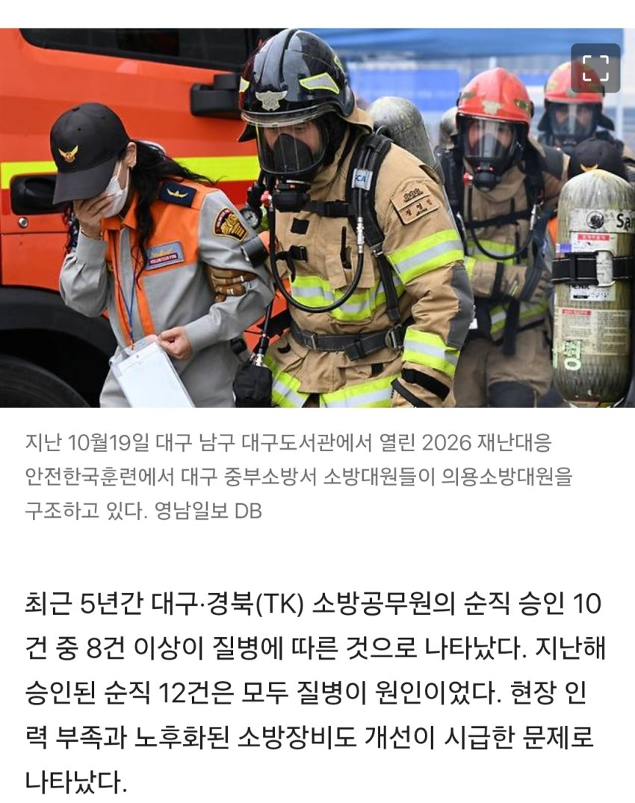
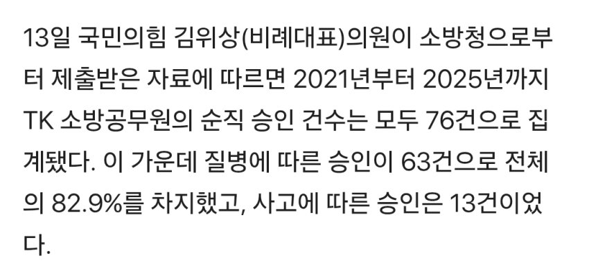
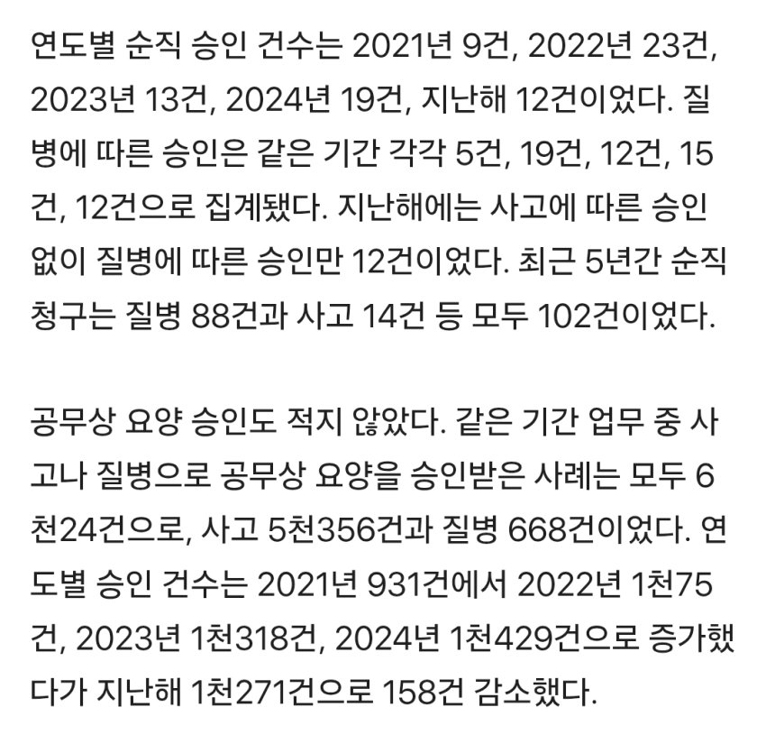
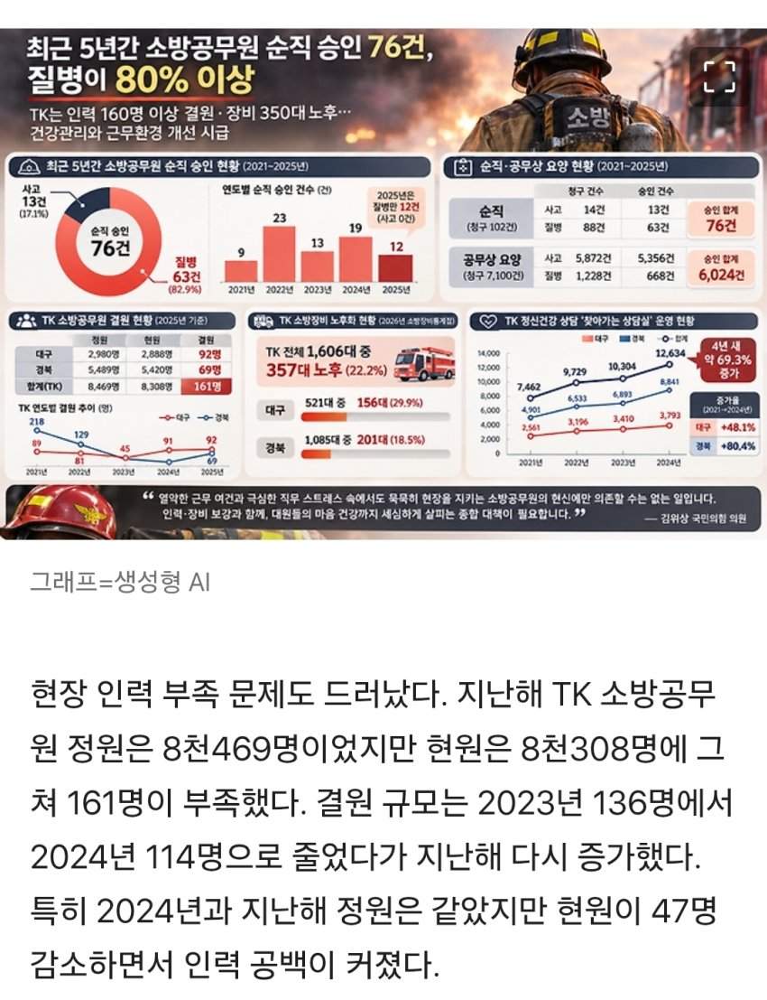
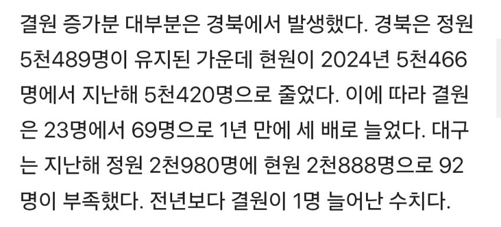
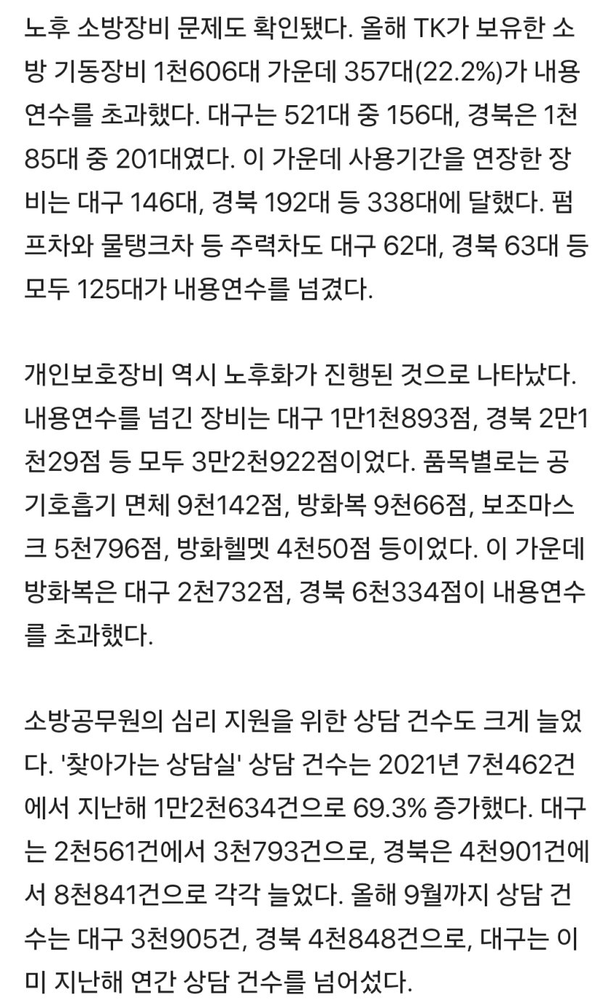
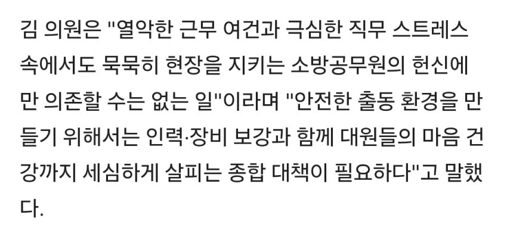

https://v.daum.net/v/20261113143514856 [단독] TK 소방공무원 순직 승인 10건 중 8건 ‘질병’…인력·장비 부족도 심각최근 5년간 대구·경북(TK) 소방공무원의 순직 승인 10건 중 8건 이상이 질병에 따른 것으로 나타났다. 지난해 승인된 순직 12건은 모두 질병이 원인이었다. 현장 인력 부족과 노후화된 소방장비도 개선이 시급한 문제로 나타났다. 13일 국민의힘 김위상(비례대표) 의원이 소방청으로부터 제출받은 자료에 따르면 2021년부터 2025년까지 TK 소방공무원의v.daum.net출처: 중도우파 갤러리 [원본 보기]

댓글
수집 당시 댓글 62개
ㅋㅋ · 11.13 22:41:10
ㅇㅇ · 11.13 22:41:24
ㅇㅇ · 11.13 22:41:49
· ㅇㅇ · 11.13 22:42:09
· ㅇㅇ · 11.13 22:42:28
ㅇㅇ · 11.13 22:42:04
· ㅇㅇ · 11.13 22:42:46
· ㅇㅇ · 11.14 10:34:56
ㅇㅇ · 11.13 22:42:06
· ㅇㅇ · 11.14 08:34:29
ㅇㅇ · 11.13 22:42:32
ㅇㅇ · 11.13 22:43:15
ㅇㅇ · 11.13 22:44:49
쌍도 짱깨
ㅇㅇ · 11.13 22:50:19
· ㅇㅇ · 11.13 22:50:27
· ㅇㅇ · 11.14 03:53:33
짱~깨
· ㅇㅇ · 11.14 04:37:00
대~구
ㅇㅇ · 11.13 22:51:59
· ㅇㅇ · 11.13 22:54:48
ㅇㅇ · 11.13 23:03:47
ㅇㅇ · 11.13 23:06:13
ㅇㅇ · 11.13 23:23:44
ㅇㅇ · 11.13 23:35:54
ㅇㅇ · 11.13 23:51:59
· ㅇㅇ · 11.14 00:23:55
ㅇㅇ · 11.13 23:57:01
ㅇㅇ · 11.14 00:16:07
ㅇㅇ · 11.14 00:40:57
ㅇㅇ · 11.14 00:42:31
ㅇㅇ · 11.14 00:49:18
ㅇㅇ · 11.14 00:59:33
ㅇㅇ · 11.14 00:59:50
ㅇㅇ · 11.14 01:02:20
ㅇㅇ · 11.14 01:09:37
· ㅇㅇ · 11.14 03:53:18
짱~깨
· ㅇㅇ · 11.14 04:36:27
대~구
ㅇㅇ · 11.14 01:32:48
ㅇㅇ · 11.14 01:34:16
ㅇㅇ · 11.14 01:51:17
ㅇㅇ · 11.14 02:22:32
ㅇㅇ · 11.14 02:22:37
ㅇㅇ · 11.14 03:12:48
끄덕? 대구대구
· ㅇㅇ · 11.14 03:53:12
짱~깨
· ㅇㅇ · 11.14 04:36:49
대~구
ㅇㅇ · 11.14 03:37:00
ㅇㅇ · 11.14 03:53:03
ㅇㅇ · 11.14 03:53:51
ㅇㅇ · 11.14 04:13:11
ㅇㅇ · 11.14 04:39:40
ㅇㅇ · 11.14 04:58:32
ㅇㅇ · 11.14 06:59:47
ㅇㅇ · 11.14 08:05:35
개쌍도
통구이
ㅇㅇ · 11.14 08:05:41
경상도는
흑인국가
ㅇㅇ · 11.14 08:33:58
ㅇㅇ · 11.14 08:46:37
ㅇㅇ · 11.14 09:34:43
ㅇㅇ · 11.14 10:47:25
ㅇㅇ · 11.14 10:51:20
ㅇㅇ · 11.14 12:22:17
ㅇㅇ · 11.14 14:53:35
· ㅇㅇ · 11.14 14:54:08
ㅇㅇ · 11.14 17:40:15